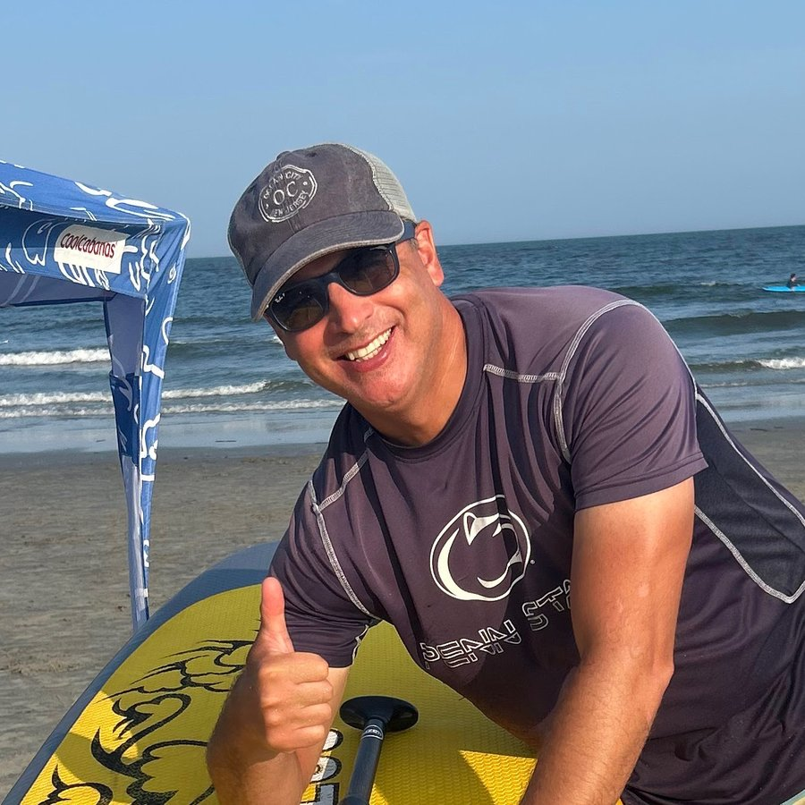

About Wave Clock

Where it started
I grew up boogie boarding in Wildwood, and these days I'm down in Ocean City every chance I get. Somewhere along the way, checking the tide turned into an obsession — nothing ruins a beach day faster than setting up your chairs in the perfect spot, only to watch the tide creep in and swallow them a couple hours later.
I'm an electrical engineer by training (Penn State, go Nittany Lions), and I'd rather build a thing than just wish it existed. So instead of squinting at a tide chart on my phone, I built a little display that just sits there, glanceable and beautiful, always showing what the ocean's up to. That idea turned into Wave Clock.
What I'm about
I'm always thinking about catching that next wave on my paddle board while I hand-build every wooden stand myself, then program, pack, and ship each Wave Clock personally — no warehouse, no call center, just someone who loves the coast and loves talking to people about the beach.
My goal is simple: help people spend less time on their phones and more time enjoying the beach. If a Wave Clock gets you to the perfect spot before the tide does, I've done my job.
Thanks for stopping by, and I'll see you at the beach. 🌊